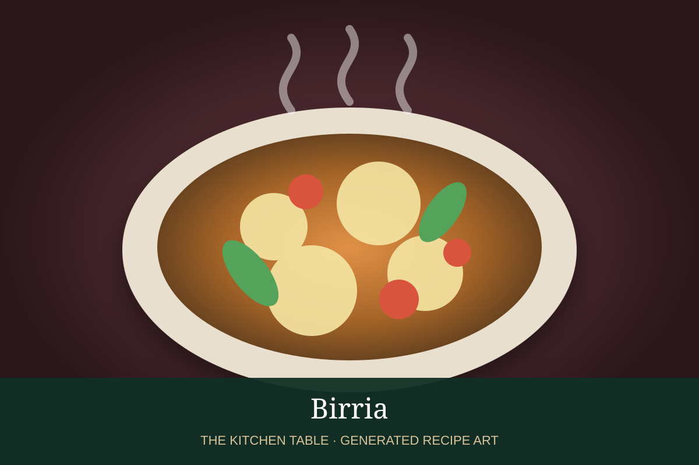

← Back to all recipes
BREAKFAST · MEXICAN
Birria con Consomé
Tender birria served in its rich red chile broth with onion, cilantro, lime, and tortillas.
20 min if birria preparedServes 6

Photo: Cocinista
Ingredients
- 6 cups prepared birria with broth
- Chopped white onion
- Chopped cilantro
- Lime wedges
- Warm corn tortillas
- Salsa de chile de árbol, optional
Preparation
- Warm birria and consomé gently.
- Adjust salt and skim excess fat only if desired.
- Ladle meat and broth into deep bowls.
- Top with onion and cilantro.
- Serve with lime, tortillas, and hot salsa.
Related Mexican Recipes
Birria → · Salsa de Chile de Árbol → · Handmade Corn Tortillas → · Tacos de Barbacoa →